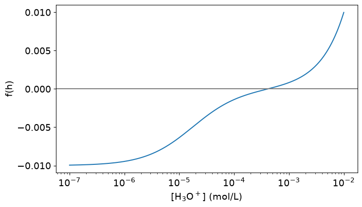
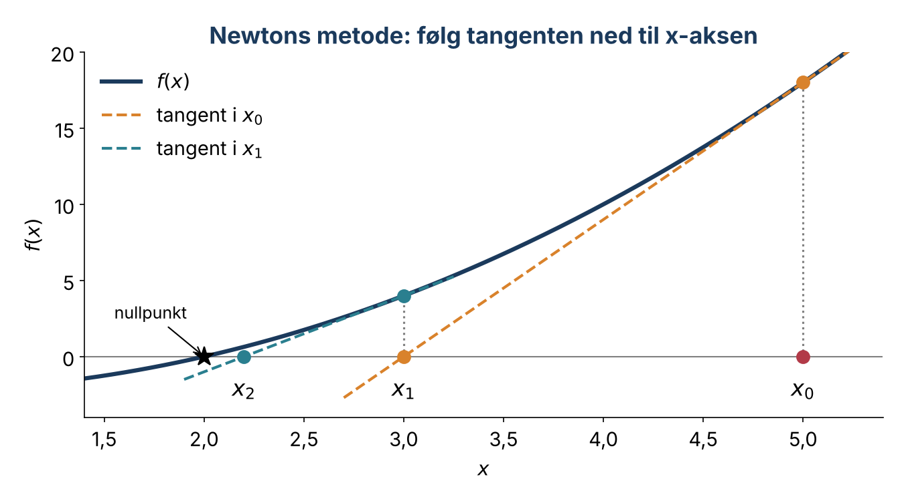

Forelesning 5: Likninger og nullpunkter#
I dag skal vi
repetere statistikk fra forrige uke med en oppgave i tre deler
repetere halveringsmetoden ved å lese og forklare kode
utlede og programmere Newtons metode, og undersøke når den virker og når den feiler
bruke metodene til å finne pH i en svak syre
import numpy as np
import pandas as pd
import matplotlib.pyplot as plt
from scipy import stats
plt.rcParams.update({"font.size": 14, "figure.figsize": (8, 4.5)})
Repetisjon: Koffein i energidrikker (15 til 20 minutter)#
Ifølge etiketten inneholder en energidrikk 32 mg koffein per 100 mL. To laboratorier, A og B, har analysert koffeininnholdet i de samme seks boksene med HPLC. Her er et utsnitt av datasettet:
can |
lab |
caffeine_mg_100mL |
|---|---|---|
1 |
A |
31.2 |
1 |
B |
31.8 |
2 |
A |
32.5 |
2 |
B |
33.0 |
… |
… |
… |
data = pd.DataFrame({
"can": [1, 2, 3, 4, 5, 6] * 2,
"lab": ["A"] * 6 + ["B"] * 6,
"caffeine_mg_100mL": [31.2, 32.5, 30.8, 31.9, 31.4, 32.0,
31.8, 33.0, 31.5, 32.5, 32.0, 32.7],
})
data
Del a) Beskriv dataene. Beregn antall målinger, gjennomsnitt, standardavvik og RSD for hvert laboratorium. Er presisjonen omtrent lik i de to laboratoriene?
Del b) Stemmer etiketten? Bruk målingene fra laboratorium A. Beregn et 95 % konfidensintervall og utfør en passende t-test mot 32 mg/100 mL. Hva kan du konkludere, og hva kan du ikke konkludere?
Del c) Er laboratoriene uenige? Velg en t-test for å sammenlikne A og B, og begrunn valget. Er forskjellen mellom laboratoriene kjemisk viktig?
Tips: data[data["lab"] == "B"].sort_values("can") gir målingene i samme rekkefølge som boksene.
Del 1: Likninger som nullpunktsproblemer#
Enhver likning \(g(x) = h(x)\) kan skrives om til et nullpunktsproblem:
Mange likninger i kjemi har ingen analytisk løsning. Da finner vi nullpunktet numerisk, steg for steg.
Eksempel: pH i 0,010 M eddiksyre#
Vi kan kombinere følgende sammenhenger for å utlede en funksjon \(f(h)\) som beskriver syre-base-likevekten for en svak syre, der \(h = [\mathrm{H_3O^+}]\):
Syrekonstanten for en svak syre \(\mathrm{HA}\):
\[K_a = \frac{[\mathrm{H_3O^+}][\mathrm{A^-}]}{[\mathrm{HA}]}\]Massebalansen, der \(C\) er den totale konsentrasjonen av syren:
\[C = [\mathrm{HA}] + [\mathrm{A^-}]\]Vannets ioneprodukt:
\[K_w = [\mathrm{H_3O^+}][\mathrm{OH^-}]\]Ladningsbalansen, som sier at summen av positive og negative ladninger må være lik:
\[[\mathrm{H_3O^+}] = [\mathrm{A^-}] + [\mathrm{OH^-}]\]
Ved å kombinere disse sammenhengene og samle alle ledd på én side får vi:
pH finner vi der \(f(h) = 0\). Det er lurt å plotte funksjonen først for å se hvor nullpunktet ligger, sånn ca:
C = 0.010
Ka = 1.75e-5
Kw = 1.0e-14
def charge_balance(h):
return h - C * Ka / (h + Ka) - Kw / h
h = np.logspace(-7, -2, 500)
plt.plot(h, charge_balance(h))
plt.xscale("log")
plt.axhline(0, color="gray")
plt.xlabel("[H$_3$O$^+$] (mol/L)")
plt.ylabel("f(h)")
plt.show()

Diskuter: Omtrent hvor ligger nullpunktet? Hvilket intervall ville du valgt for halveringsmetoden?
Del 2: Repetisjon av halveringsmetoden#
Les og forklar: Diskuter koden nedenfor i par. Én forklarer linje 1 til 8, den andre resten. Svar på disse spørsmålene sammen:
Hvorfor sjekker vi
f(a)*f(m) < 0?Hvorfor bruker vi en toleranse i stedet for
f(m) != 0?Hva skjer hvis
f(a)ogf(b)har samme fortegn?Hvorfor har funksjonen et maksimalt antall iterasjoner?
def halveringsmetoden(f, a, b, tol=1e-10, max_iter=100):
i = 0
m = (a + b) / 2
while i < max_iter and abs(f(m)) > tol:
if f(a) * f(m) < 0:
b = m
elif f(b) * f(m) < 0:
a = m
m = (a + b) / 2
i = i + 1
if i == max_iter:
print("Maks antall iterasjoner er nådd.")
return m, i
h_root, iterations = bisection(charge_balance, 1e-7, 1e-2)
print(f"pH = {-np.log10(h_root):.3f} etter {iterations} iterasjoner")
Halveringsmetoden er robust: Har vi et fortegnsskifte, finner den alltid et nullpunkt. Men den er treg, fordi intervallet bare halveres for hver iterasjon.
Del 3: Newtons metode#

Idé: Vi starter i en gjetning \(x_0\), tegner tangenten og ser hvor den krysser x-aksen. Der er neste gjetning.
Vi utleder metoden på tavla.
Newtons metode
Vi gjentar til \(|f(x_n)|\) er mindre enn en toleranse. Metoden trenger en startverdi og den deriverte \(f'(x)\).
Newtons metode i Python#
Vi tester på \(f(x) = x^2 - x - 2\), som har nullpunktet \(x = 2\).
Prøv selv: Hvor fort går det? Legg til en teller i, og skriv ut i, x og f(x) for hver iterasjon. Hvor mange iterasjoner trengs? Hva skjer med antall riktige desimaler for hver iterasjon?
x = 5
i = 0
while abs(f(x)) > 1e-8:
x = x - f(x) / fder(x)
??
print(??)
Nær nullpunktet blir antall riktige desimaler omtrent doblet for hver iterasjon. Det kalles kvadratisk konvergens. Halveringsmetoden vinner bare omtrent én desimal for hver tredje iterasjon.
Del 4: pH med Newtons metode#
Nå bruker vi Newtons metode på eddiksyreproblemet.
Prøv selv:
Deriver \(f(h) = h - \dfrac{C K_a}{h + K_a} - \dfrac{K_w}{h}\) for hånd, og skriv funksjonen
charge_balance_der(h).Bruk tilnærmingen \(h_0 = \sqrt{K_a C}\) som startverdi. Hvor mange iterasjoner trenger Newtons metode? Sammenlikn med halveringsmetoden.
Diskuter: Hvorfor er \(\sqrt{K_a C}\) en god startverdi? Hvorfor er det en god idé å bruke kjemikunnskap til å velge startverdi?
Del 5: Når feiler Newtons metode?#
Vi prøver \(f(x) = x^3 - 2x + 2\) med startverdi \(x_0 = 0\).
Tipp først: Hva skjer? Programmet stopper etter seks iterasjoner, slik at det ikke går i evig løkke.
def p(x):
return x**3 - 2*x + 2
def pder(x):
return 3*x**2 - 2
x = 0
for i in range(6):
x = x - p(x) / pder(x)
print(i + 1, x)
Newtons metode kan feile når
startverdien ligger for langt unna nullpunktet, slik at iterasjonene går i ring eller havner ved et annet nullpunkt
\(f'(x_n) = 0\), slik at tangenten er vannrett og vi deler på null
funksjonen ikke har noe nullpunkt i nærheten
Finn feilen: Funksjonen nedenfor kan gå i evig løkke. Rett den slik at den har et maksimalt antall iterasjoner og gir en advarsel, slik som bisection. Test den på p med startverdi 0 og startverdi −2.
def newton(f, fder, x, tol=1e-10):
while abs(f(x)) > tol:
x = x - f(x) / fder(x)
return x
Diskuter: Hva skjer hvis du bruker startverdi \(x_0 = 0{,}5\) for \(f(x) = x^2 - x - 2\)? Hvorfor?
Del 6: Ferdige løsere#
root_scalar fra SciPy har både halveringsmetoden og Newtons metode. Resultatet forteller om metoden konvergerte, og hvor mange iterasjoner som trengtes.
Hva bruker vi når?#
Situasjon |
Metode |
|---|---|
Vi kjenner et intervall med fortegnsskifte |
Halveringsmetoden |
Vi har en god startverdi og kjenner den deriverte |
Newtons metode |
Allround god løser som itererer fort |
Brents metode (brentq) |
Sjekk alltid at løsningen er kjemisk rimelig, for eksempel at konsentrasjonen er positiv.
Oppgaver:
Finn pH i 0,0250 M eddiksyre med Newtons metode. Sammenlikn med tilnærmingen \([\mathrm{H_3O^+}] \approx \sqrt{K_a C}\). Hvor stor er forskjellen?
Bruk
newtonpå \(f(x) = x^3 - 2x + 2\) med minst fem ulike startverdier. Forklar hvorfor metoden lykkes fra noen og feiler fra andre. Plott gjerne funksjonen.Finn alle løsningene av \(x^5 = 5x^3 + 3\). Plott først nullpunktsfunksjonen, og bruk deretter Newtons metode med ulike startverdier.
For likevekten A ⇌ B starter vi med 1,00 M A. Ved likevekt er \([\mathrm{B}] = x\) og \([\mathrm{A}] = 1 - x\), og \(K = 3{,}5\). Skriv \(K = [\mathrm{B}]/[\mathrm{A}]\) som et nullpunktsproblem, løs det med Newtons metode og kontroller svaret analytisk.
Velg metode og begrunn valget: a) et fortegnsskifte mellom 2 og 3, men en derivert som er vanskelig å beregne; b) en god startverdi og en enkel derivert; c) mistanke om tre nullpunkter i \([-5, 5]\).